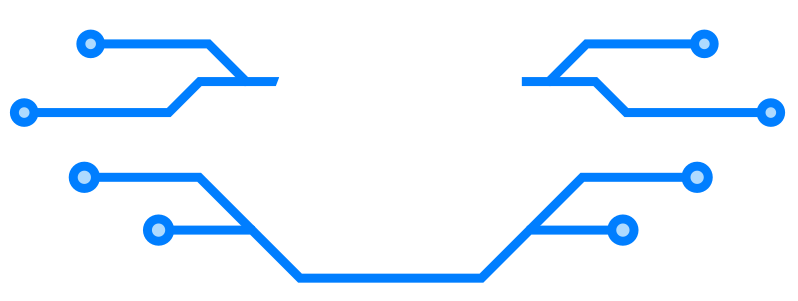

2027
I voor
I voor on INDIVIDUAALNE ning LAHENDATAV KAUGELT ehk kodust, koolist või kus iganes Sul kõige mugavam tegutseda on.
Õigeks ajaks lahendused esitanud ning I vooru läbinud võistlejad saavad I vooru meene ning salavõtme. Võti on vajalik II vooru väljakutse esitamisel.
I VOORU VÄLJAKUTSE ON SAADAVAL SIIN!
Selle vooru väljakutse sisaldab kolme väikest ülesannet, mis tuleb lahendada ühe TalTechi tudengi lõputöö raames valminud mikrokontrolleri simulaatori peal. Väljakutse keerukus peitub osaliselt selles, et tegemist on tavapärasest võõra süsteemiga. Tuleb osata lugeda dokumentatsiooni, üles leida õiged käsud ning suuta nende põhjal kirjutada ülesannetele vastavad programmid. Lõpetuseks on vaja kirjutada oma ülesanne ja sellele vastav programm. Kõigile soovijatele näitame, kuidas nende tehtud programm tegeliku seadme peal töötab.
Meene saamiseks esita lahendus hiljemalt:
I vooru läbimiseks tuleb võistlejal:
- Lahendada vähemalt kaks kolmest I vooru väljakutses etteantud ülesandest.
- Koostada ise üks ülesande tekst ja esitada selle ülesande lahendus.
- Esitada enda lahendused tähtajaks.
- Saada ASI Karika 2027 korraldusmeeskonnalt kinnitus I vooru läbimisest.
ESITA I VOORU VÄLJAKUTSELE LAHENDUSED SIIN!
Tähtajad:
1. TÄHTAEG: 21.12.2026 12:59 on tähtaeg I vooru töö esitamiseks, kui soovid I vooru läbimisel pälvida I vooru meenet.
2. TÄHTAEG: 15.02.2027 12:59 on viimane aeg I vooru töö esitamiseks. Ühtlasi ka viimane võimalus salavõtme saamiseks.